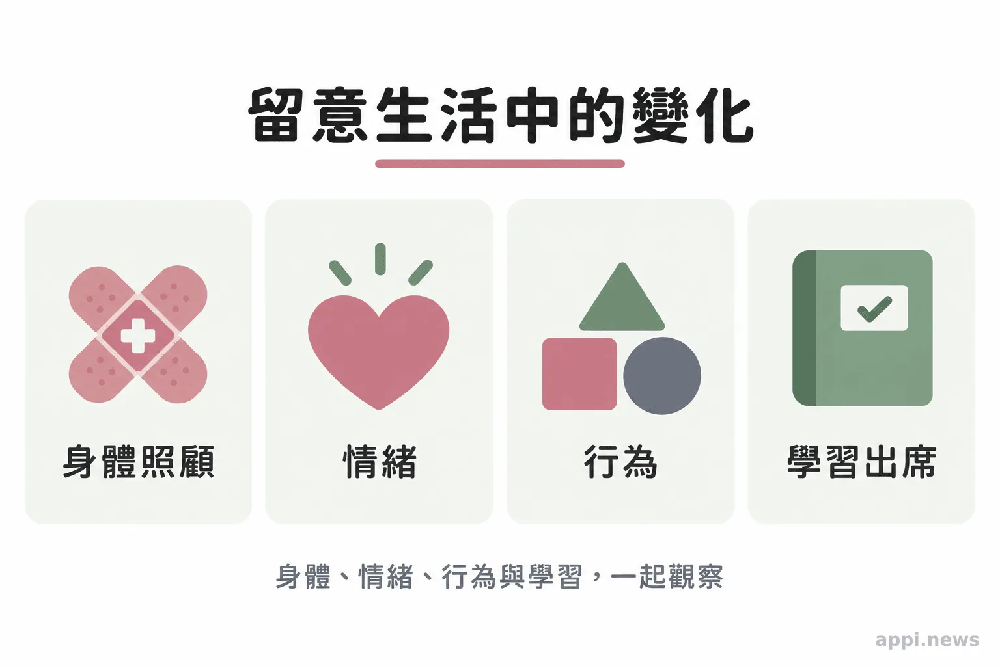
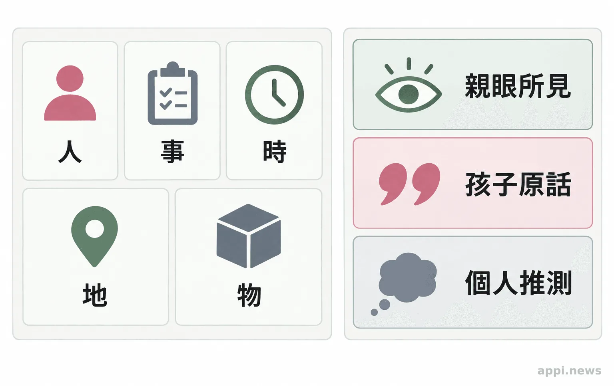
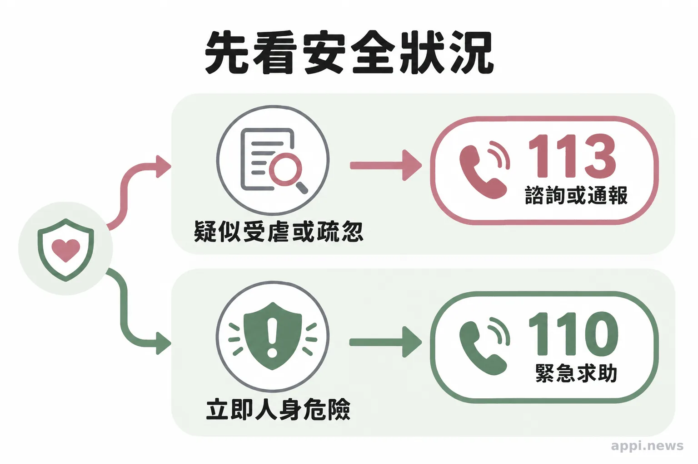

孩子的改變，值得大人多看一眼：兒少保護與通報指南
孩子的傷勢、情緒或學習變化都有不同成因。認識兒少保護的觀察原則、客觀記錄方式，以及113諮詢通報與110緊急求助的分工。
孩子身上出現傷痕、最近變得沉默，或上學狀況和以往不同，身邊的大人常會猶豫：這是不是受虐訊號？家長、教師、課後班工作者與社區志工都可能先注意到改變，但觀察不是判定。把狀況記清楚，必要時向專業窗口求助，能提供後續評估線索，也避免孩子被標籤或反覆追問。
一、觀察孩子的變化，不替孩子下診斷
孩子的身體、情緒、行為或學習若與平常不同，且變化持續或出現在多個生活情境，可以進一步關心；單一狀況不足以認定受虐或疏忽。
每個孩子的作息與表達方式不同。大人可以比較孩子過去和現在：原本願意和同學互動，近來常獨自待著；過去出席穩定，最近持續缺課；或反覆出現傷勢，說明和觀察到的情況難以對上。這些現象可能和健康、家庭變動或人際壓力有關，是關心與求助的起點，不是結論。
留意變化的頻率、時間、情境和是否伴隨其他狀況，比只記住一個「警訊清單」更有幫助。衛生福利部提供兒少保護徵兆與求助資訊，並說明通報後由主管機關進行評估與家庭協助。家長和志工不必扮演調查者；當疑慮持續或涉及安全，就把已知情況交給適當窗口處理。
二、從身體、情緒、行為與學習留意生活訊號
值得留意的情況可能包括反覆傷勢、基本照顧需求長期未獲滿足、明顯退縮或警戒，以及出席和學習狀況持續改變；每一項都要放回孩子的生活情境理解。
身體方面，可記下反覆傷勢、傷勢說明前後不同，或孩子是否長期缺少適齡的飲食、休息、醫療與安全照顧。外表髒亂、衣物不合季節或家中經濟吃緊，單獨不能證明照顧者疏忽；要留意基本需求是否長期未被回應，以及有無具體安全疑慮。
情緒與行為方面，有些孩子可能比以往更退縮、警戒、容易受驚或易怒，也可能在特定場所或活動前後顯得不安。學習與出席方面，則可留意注意力、作業完成、到校情形和同儕互動是否持續改變。疾病、搬家、喪親、霸凌或其他壓力也會影響孩子，因此記錄具體變化，比替孩子的反應貼上標籤更有用。
若孩子受傷，先處理醫療與安全，不要求孩子脫衣檢查，也不為留證拍攝、傳送傷勢影像。兒少的姓名、照片、學校、住址等資料不應在群組或社群公開，只提供給必要的協助者。

三、先聽孩子說，再把可核對的事記下來
先確認孩子當下是否安全，平靜聆聽並記錄親眼所見、孩子原話與時間地點；不要誘導、反覆盤問、私下蒐證或質問疑似照顧者。
記錄可以依「人、事、時、地、物」整理：誰在場、發生什麼事、日期時間、地點，以及看見或聽見的具體內容。比如寫「週三放學時，孩子右手有紅痕，孩子說『今天在家跌倒』」，並標明這是孩子的原話。不要把尚未確認的推測寫成事實，也不要請孩子一再重述經過。
孩子若主動開口，大人可以先說：「謝謝你告訴我。你現在需要什麼幫忙？」不責怪孩子，也不承諾替他保密；可以清楚告訴孩子，會找能保護他的成人一起想辦法。一般民眾和志工的工作是關心、記錄與求助，不是自行訪談其他孩子、查訪家庭或決定案件是否成立。
- 確認安全：若孩子眼前有立即人身危險，先撥110尋求緊急協助。
- 記下觀察：按時間整理人、事、時、地、物，分開標示所見、原話與推測，妥善保護個資。
- 聯繫窗口：有兒少受虐或疏忽疑慮，可撥113諮詢或通報；專業責任通報人員依職務法定義務辦理。

四、113提供諮詢與通報，立即危險先打110
懷疑孩子遭受虐待或疏忽，可撥113諮詢或通報；若孩子正面臨立即人身安全危險，先撥110。通報不代表案件已經認定成立，後續由主管機關依資料評估。
衛生福利部保護服務司說明，113保護專線全年無休，任何民眾都可就兒少保護疑慮求助；撥打時可盡量提供孩子所在地和人、事、時、地、物資訊。資料還不完整，也可以先說明目前知道的狀況，和接線人員討論下一步。若不方便通話，官方另提供線上諮詢與簡訊服務。
《兒童及少年福利與權益保障法》第53條規定，醫事、社工、教育、保育、教保、警察、司法等條文列明人員，以及其他執行兒少福利業務者，在執行業務時知悉法定情形，應立即向地方主管機關通報，最遲不得超過24小時。一般民眾知悉法定情形，也得通報地方主管機關；法條並要求保密通報人身分資料。
「任何人知悉兒童及少年有前項各款之情形者，得通報直轄市、縣（市）主管機關。」《兒童及少年福利與權益保障法》第53條
家長、教師與社區夥伴可以從記下孩子的變化開始，保護個資，並在有疑慮時使用正式求助管道。是否構成兒少保護案件，由主管機關依個別狀況評估；大人能做的是尊重隱私，讓支持回到孩子的安全與照顧需求。

五、兒少保護常見問題
可以先撥113諮詢，不必自行查證或蒐集證據；把觀察到的情況說明清楚，由主管機關判斷後續處理方式。
常見問題
Q1：看到哪些變化時可以撥113？
若孩子出現持續或多項安全、照顧疑慮，或你知悉法定通報情形，可以撥113諮詢或通報。單一行為、傷勢或缺課不能直接判定受虐。
Q2：通報前要先取得證據嗎？
不需要自行調查或蒐證。提供親眼所見、孩子原話、時間地點及孩子目前安全狀況即可。
Q3：可以拍傷勢照片或問其他孩子嗎？
一般觀察者不宜為蒐證拍攝或傳送兒少影像，也不要訪問其他孩子。以文字記錄可核對的事實，並保護個人資料。
Q4：撥113時要準備哪些資訊？
可提供孩子所在地、事件時間、發生頻率、目前狀況，以及你親自觀察到的細節；資訊不完整仍可先諮詢。
Q5：孩子現在有立即危險怎麼辦？
先撥110尋求緊急協助，在安全可行時讓孩子遠離眼前危險，再依情況聯絡113或地方主管機關。
- 觀察兒少保護訊號時，看孩子平常狀態、變化是否持續、發生情境與其他線索；單一訊號不能判定受虐。
- 記下人、事、時、地、物，區分親眼所見、孩子原話和個人推測，並保護兒少個資。
- 疑似受虐或疏忽可撥113諮詢或通報；立即人身安全危險先撥110。
參考文獻
- 衛生福利部保護服務司（更新日期：民國115年9月24日）。113保護專線介紹。https://dep.mohw.gov.tw/dops/cp-1183-6499-105.html
- 衛生福利部保護服務司（更新日期：民國115年7月14日）。兒少保護。https://www.mohw.gov.tw/fp-190-233-1.html
- 法務部全國法規資料庫（法規資料截止：民國115年9月24日）。兒童及少年福利與權益保障法第53條。https://law.moj.gov.tw/LawClass/LawSingle.aspx?pcode=D0050001&flno=53
- 衛生福利部保護服務司（更新日期：民國113年5月6日）。兒虐風險敏感度與責任通報知能（共3支）。https://dep.mohw.gov.tw/DOPs/cp-1311-78599-105.html
本文同步刊於 appi.news。